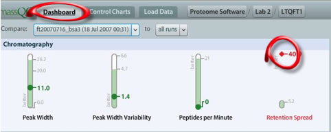
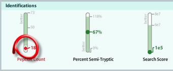
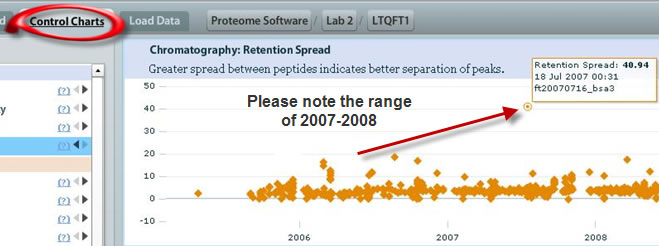
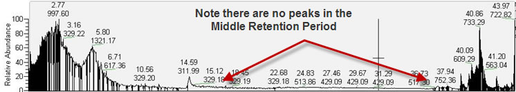

Looking at the liquid chromatogram can often lead to diagnosis of an LC problem. We first look to the MassQC Dashboard to see what metrics are out of range, if any:

In addition to the Retention Spread being out of range, the number of Peptide Counts is out of range (low) as well:

As we move from viewing the MassQC Dashboard to the Control Charts , we notice that, indeed, the historical data agree with the alerts. This graph shows a QC run that is way our of range:

Since Retention Spread is an LC problem, we may ask the question: what is causing this Retention time shift and how is the Peptide Count data related? For this we look to the mass spectrum to see if there is something wrong with the liquid chromatogram :

Looking at XCalibur, there appears to be some split in the chromatography. Material is eluting very early and towards the end, with not much in-between. Likely causes: flow rate slowed due to partial clog in the chromatography column ; LC pump not smoothly transitioning through the aqueous/organic solvent gradient.